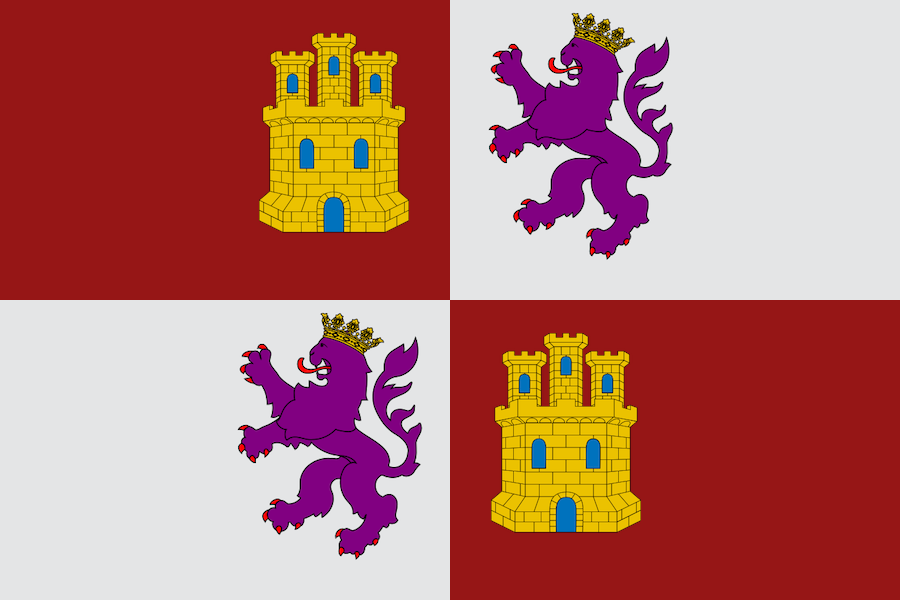
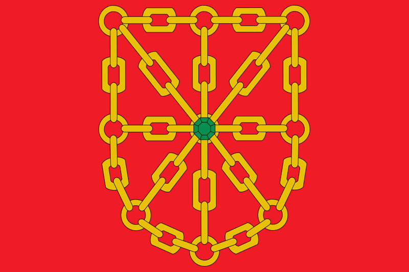
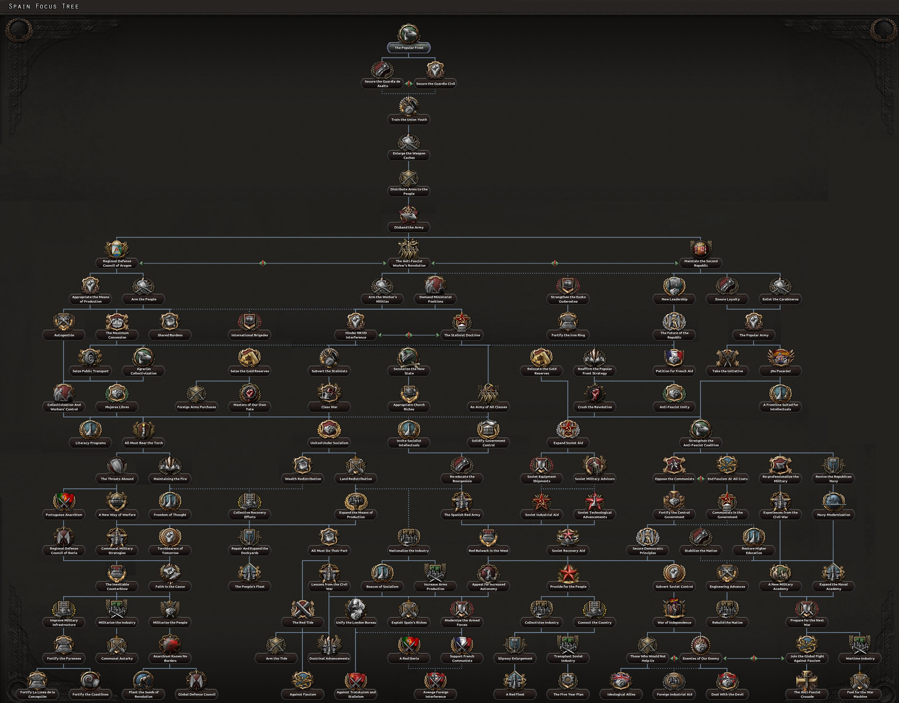
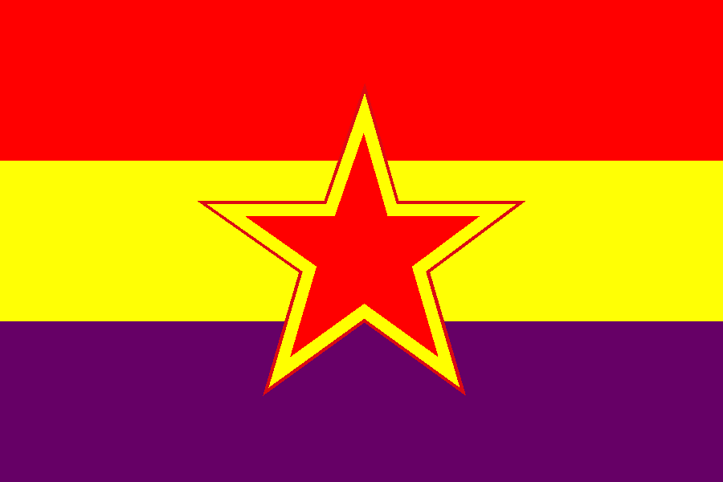
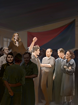
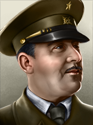
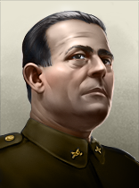
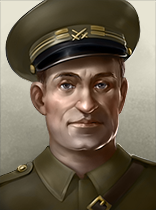
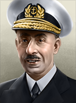
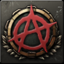

| 陆军科技 | 海军科技 | 空军科技 | 电子与工业 |
|---|---|---|---|
|
|
没有
|
「无」 |
| 陆军学说 | 海军学说 | 空军学说 |
|---|---|---|
|
「无」 |
「无」 |
「无」 |
原页面：Republican Spain
 共和西班牙 is a minor power located on the Iberian Peninsula, bordering
共和西班牙 is a minor power located on the Iberian Peninsula, bordering  葡萄牙 to the west,
葡萄牙 to the west,  法国 to the northeast, the Mediterranean Sea around the south to the west, the Atlantic Ocean to the north and northwest, and the
法国 to the northeast, the Mediterranean Sea around the south to the west, the Atlantic Ocean to the north and northwest, and the  英国 by its colonial holding of Gibraltar. Republican Spain also borders France via Spain's colonial holdings in Spanish Africa, Rio de Oro, and Equatorial Guinea.
When used with the 11th of November rule(which can be found in the custom game rules),
英国 by its colonial holding of Gibraltar. Republican Spain also borders France via Spain's colonial holdings in Spanish Africa, Rio de Oro, and Equatorial Guinea.
When used with the 11th of November rule(which can be found in the custom game rules),  共和西班牙 is known as
共和西班牙 is known as

Crown of Castille. Crown of Castille borders
Kingdom of Navarra in the northeast andWhen the dictatorship of Primo de Rivera came to an end on January 28, 1930, Spain faced an unparalleled political dilemma. Groups across all ideologies disputed the nation's fate, divided between monarchists and republicans. King Alfonso XIII called a national referendum so that Spaniards could decide between a constitutional monarchy and a republic by 1931. Although the monarchists won in rural areas, the republicans or the "Popular Front" won overwhelmingly in cities and industrial centers. The republican success in the urban areas convinced Alfonso XIII to abdicate and led to the establishment of the Second Spanish Republic under the Populat Front. The Republic itself would be a major experiment for democracy in Spain to see how it would operate without the Bourbon monarchy. However, the Republic faces political and military instability from right-wing elements opposed to democracy, resulting in at least one failed coup attempt in 1932 by General José Sanjurjo, known as the Sanjurjada. Furthermore, the nation struggled with deep political divisions from not only the right-wing but also the left-wing as well from groups like the Carlists, the Falangists and the CNI-FAI. The government sought to keep the political balance and work with republican elements from the left and the right to maintain stability. But it would not be enough as political instability grew even further throughout the early to mid 1930s.
With the nation on the brink of civil war, the Second Spanish Republic faced multiple coup attempts; the most famous being the "Revolution" of Asturias in 1934 led by the Spanish Socialist Workers Party and the Communist Party of Spain that left more than 20,000 dead and saw Francisco Franco named as a hero of the Republic for quelling the uprising, and more than 2,500 political assassinations throughout the nation during its six years of life. In 1936, the government of Niceto Alcalá-Zamora gave way to that of Manuel Azaña in elections marked by corruption, which led the Popular Front to victory.

 共和西班牙 gets a unique focus tree as with the
共和西班牙 gets a unique focus tree as with the  La Résistance expansion. Without the expansion, it utilizes the 通用国策树 instead.
La Résistance expansion. Without the expansion, it utilizes the 通用国策树 instead.
The Republican Spanish national focus tree can be divided into 12 sections. 1 pre civil war branch leading into 3 main branches and 2 shared branches. A post civil war sub-branch can be split from each of these branches. The post civil war Communist Branch can be divided into 2 separate sub branches:

International Brigades/Seize the Gold Reserves Branch
With the  抵抗运动 DLC enabled, Spain starts with the following 国家精神:
抵抗运动 DLC enabled, Spain starts with the following 国家精神:
 共和西班牙 begins with 3 research slots available; 2 more can be unlocked through the national focus tree. Note: in 1939, it has been replaced by
共和西班牙 begins with 3 research slots available; 2 more can be unlocked through the national focus tree. Note: in 1939, it has been replaced by  国民西班牙.
国民西班牙.
| 陆军科技 | 海军科技 | 空军科技 | 电子与工业 |
|---|---|---|---|
|
|
没有
|
「无」 |
| 陆军学说 | 海军学说 | 空军学说 |
|---|---|---|
|
「无」 |
「无」 |
「无」 |
| 陆军科技 | 海军科技 | 空军科技 | 电子与工业 |
|---|---|---|---|
无
|
|
没有
|
|
| 陆军学说 | 海军学说 | 空军学说 |
|---|---|---|
|
|
|
 共和西班牙 为各种科技与装备设有一些独特名称，列于此处。请注意，通用名称不在此列。
共和西班牙 为各种科技与装备设有一些独特名称，列于此处。请注意，通用名称不在此列。
| 类型 | 1918 | 1936 | 1939 | 1942 |
|---|---|---|---|---|
| 步兵装备 | Mauser M93 | Destroyer Carbine | Labora Fontbernat M38 | EMP-Coruña |
| 科技年份 | 轻型（反坦克/自行火炮/防空） | 中等 | Modern | 重型 | Super-Heavy |
|---|---|---|---|---|---|
| 1918 | Trubia A4 | ||||
| 1934 | Trubia Naval | TP 1 | |||
| 1936 | Verdeja 1 (NA / Verdeja 75mm / NA) | ||||
| 1938 | CDC 39 | ||||
| 1940 | CDC 41 | TP 2 | |||
| 1941 | Verdeja 2 | TP 5 | |||
| 1943 | CDC 44 | TP 3 | |||
| 1945 | CDC 52 | ||||
| 备注：若无一步不退，中型坦克 I 与 II 将推迟一年解锁。 | |||||
| 科技年份 | 近距空中支援 | 战斗机 | 海军轰炸机 | 重型战斗机 | 战术轰炸机 | 战略轰炸机 |
|---|---|---|---|---|---|---|
| 1933 | HA-900 | CASA 1.134 | NA | |||
| 1936 | HS-36 | HA-1000 | E-33 | HA-1900 | CASA 2.111 | CASA 10.100 |
| 1940 | HS-41 | HA-1112 | E-42 | HA-2100 | CASA 3.318 | CASA 12.300 |
| 1944 | HS-44 | HA-1115 | E-46 | HA-2400 | CASA 4.181 | CASA 18.500 |
Spain lies in Southwestern Europe, with most of its land being on the Iberian peninsula. 1930s Spain also comprises the Balearic Islands and African territory and Islands. Parts of North Africa, namely the Rio de Oro region of modern-day Morocco, Western Sahara, Equatorial Guinea, and the Canary Islands off the coast of Northwest Africa are owned and controlled by Spain.
Spain is dominated by mountainous and hilly terrain, and mainland Spain is very uneven, with 45 percent of it being covered by the Meseta Plateau. The plateau is rarely flat, with many uneven hills, mountains, and highlands. Spain contains many significant mountain ranges including the Baetic Mountains in the south, the Central and Iberian Chain in the center, and Cantabrian and Pyrenees Mountain ranges in the northwest and northeast respectively. There is also the fertile Andalusian Plain and other basins. There are many large coastal plains, with bays, coves, and sandy beaches. Along the Bay of Biscay, there are large coastal rugged cliffs. The Strait of Gibraltar separates Spain and Europe from Africa, specifically Morocco, with the closest points being only 13 km apart. Finally, mainland Spain contains over 1,500 rivers of which are mostly small. Significant rivers are the Duero, Ebro and Guadalquivir.
Spain shares a long border with its neighbor  葡萄牙 which makes up the rest of the Iberian peninsular. It borders
葡萄牙 which makes up the rest of the Iberian peninsular. It borders  法国 in the north, with the tall Pyrenees mountain range making a natural border between the two nations and in the south through their African colonies. Spain also borders
法国 in the north, with the tall Pyrenees mountain range making a natural border between the two nations and in the south through their African colonies. Spain also borders  英国 in the south with British-controlled Gibraltar.
英国 in the south with British-controlled Gibraltar.
Spain has multiple important borders to bodies of water, such as the Mediterranean Sea, Strait of Gibraltar, Atlantic Ocean, and the Bay of Biscay.
 共和西班牙 owns 22 core and 4 colonial states.
共和西班牙 owns 22 core and 4 colonial states.
| 州 | 城市 | 地形（省份数） | 区域 | 是否核心州 | ||
|---|---|---|---|---|---|---|
| 阿斯图里亚斯 | Oviedo | 3 | 稀疏城市区 | 1,197,252 | ||
| 布尔戈斯 | 布尔戈斯 | 3 | 乡村区 | 739,760 | ||
| Catalonia | Barcelona Gerona Tortosa |
30 1 1 |
密集城市区 | 3,036,537 | ||
| 雷阿尔城 | 雷阿尔城 | 1 | 乡村区 | 526,903 | ||
| 科尔多瓦 | 科尔多瓦 | 3 | 发达乡村区 | 1,428,513 | ||
| 东阿拉贡 | Caspe | 1 | 牧区 | 387,366 | ||
| 赤道几内亚 | Malabo | 1 | 丛林 (1) |
飞地 | 185,000 | |
| 埃斯特雷马杜拉 | Badajoz | 1 | 发达乡村区 | 1,417,652 | ||
| 加利西亚 | La Coruña Vigo |
5 3 |
城市区 | 2,295,085 | ||
| 格拉纳达 | Almería 格拉纳达 Málaga |
1 3 5 |
城市区 | 1,662,292 | ||
| 瓜达拉哈拉 | Cuenca | 1 | 乡村区 | 527,697 | ||
| Islas Baleares | Palma de Mallorca | 1 | 乡村区 | 365,500 | ||
| Islas Canarias | Santa Cruz de Tenerife | 1 | 小岛 | 561,347 | ||
| 莱昂 | 莱昂 | 1 | 乡村区 | 749,041 | ||
| 马德里 | 马德里 Toledo |
30 1 |
城市区 | 2,064,659 | ||
| 穆尔西亚 | 穆尔西亚 | 3 | 发达乡村区 | 1,007,605 | ||
| 纳瓦拉 | Pamplona | 1 | 牧区 | 359,880 | ||
| 巴斯克 | Bilbao | 10 | 发达乡村区 | 928,094 | ||
| Rio de Oro | Laayoune | 1 | 荒地 | 21,056 | ||
| 萨拉曼卡 | 萨拉曼卡 | 1 | 牧区 | 364,601 | ||
| 塞维利亚 | Cádiz 塞维利亚 |
3 10 |
稀疏城市区 | 1,746,650 | ||
| Sidi Ifni | Sidi Ifni | 1 | 牧区 | 11,043 | ||
| Spanish Africa | Ceuta Melilla Tétouan |
3 2 1 |
乡村区 | 744,000 | ||
| 瓦伦西亚 | Alicante 瓦伦西亚 |
3 10 |
稀疏城市区 | 1,979,294 | ||
| 巴利亚多利德 | 巴利亚多利德 | 3 | 乡村区 | 713,628 | ||
| 西阿拉贡 | Huesca Teruel Zaragoza |
1 1 3 |
发达乡村区 | 668,365 |
In 1936, the Second Spanish Republic is riven by internal divisions that prove to be increasingly intractable. As such, a civil war is inevitable and the player can only choose between supporting either the  民族主义者 or the
民族主义者 or the  Republicans. Specifically, a countdown will commence after the scheduled elections in February 1936, and the civil war will break out once the timer expires. It is in the interest of the Republican player to delay the civil war as long as possible via decisions to gather the maximum possible strength to fight against the Nationalists.
Republicans. Specifically, a countdown will commence after the scheduled elections in February 1936, and the civil war will break out once the timer expires. It is in the interest of the Republican player to delay the civil war as long as possible via decisions to gather the maximum possible strength to fight against the Nationalists.
 Derecha Liberal Republicana
Derecha Liberal Republicana
When used with the 11th of November rule, Crown of Castille is Non-Aligned led by Manuel Fal Conde instead of Niceto Alcalà-Zamora with the Democratic ideology. Although, the scenario solely applies to the Pre Civil War situation, as the 11th of November rule in the Post Civil War scenario will still show Spain united.
| 政党 | 意识形态 | 支持率 | 党派领袖 | 国家名称 | 是否执政？ |
|---|---|---|---|---|---|
| Partido Socialista Obrero Español | 民主主义 | 40.97% | 尼塞托·阿尔卡拉-萨莫拉 | 西班牙 / 卡斯蒂利亚 | 是 |
| Partido Comunista de España | 共产主义 | 6.99% | 何塞·迪亚斯 | 西班牙人民共和国 / 共和西班牙 / 共和卡斯蒂利亚 | No |
| Confederación Española de Derechas Autónomas | 法西斯主义 | 36.97% | 何塞·安东尼奥·普里莫·德·里维拉 | 西班牙帝国 | No |
| Comunión Tradicionalista | 中立主义 | 15.07% | 曼努埃尔·法尔·孔德 | 民族主义西班牙 / 卡洛斯派西班牙 / 卡斯蒂利亚王冠 / 卡洛斯派卡斯蒂利亚 | No |
| 政党 | 意识形态 | 支持率 | 党派领袖 | 国家名称 | 是否执政？ |
|---|---|---|---|---|---|
| Partido Socialista Obrero Español | 民主主义 | 50.00% | 曼努埃尔·阿萨尼亚 | 西班牙 | 是 |
| Partido Comunista de España | 共产主义 | 39.00% | 何塞·迪亚斯 | People’s Republic of Spain | No |
| Partido Obrero de Unificacion Marxista | 共产主义 | - | 西班牙公社 | ||
| Confederación Española de Derechas Autónomas | 法西斯主义 | 0.00% | 何塞·安东尼奥·普里莫·德·里维拉 | 西班牙帝国 | No |
| Confederación Nacional del Trabajo/Federación Anarquista Ibérica | 中立主义 | 11.00% | 无政府主义公社 | Regional Defence Council of Aragón / Regional Defence Council of Castille | No |
共和西班牙 的可能国家领袖。
的可能国家领袖。
| 意识形态 | 肖像 | 名称 | 党派 | 特质 | 效果 | 可用 |
|---|---|---|---|---|---|---|
保守主义 |
尼塞托·阿尔卡拉-萨莫拉 | 西班牙社会主义工人党（PSOE） | Indecisive |
|
Starting Leader (if Spanish Fragmentation Status isn't 11th of November) | |
保守主义 |
曼努埃尔·阿萨尼亚 | 西班牙社会主义工人党（PSOE） | 傀儡总统 |
|
can come to power via event Dismissal of Niceto Alcalá-Zamora / Yes (for the Republicans) | |
斯大林主义 |
何塞·迪亚斯 | 西班牙共产党（PCE） | 资深共产党人 |
|
can come to power via 反法西斯工人革命 | |
无政府共产主义 |
胡利安·戈尔金 | 马克思主义统一工人党（POUM） | 激进的社会主义者 |
|
can come to power via | |
无政府主义 |
 |
无政府主义公社 | CNT/FAI | 我们生存的权利 |
|
can come to power via |
Republican Spain is a mostly neutral country, with all diplomacy values revolving around "Different Ideology", "Same Ideology" and "Same Ruling Party". They do not have any special relations with countries, but that will change quickly especially with the civil war. When used with the 11th of November rule, as Crown of Castille it starts in negative relationships with Al-Andalus, which both nations have cores on each other. When the civil war occurs, Crown of Castille turns into "Republican Spain" and automatically gains cores on every Iberian neighbour except Portugal.
| 顾问 | 类型 | 效果 | 花费（） |
|---|---|---|---|
| José Antonio Girón | Industrial Falangist |
Has 不 completed focus No Compromise on Carlist Ideals |
150 |
| Manuel Hedilla | Syndicalist Falangist |
Has 不 completed focus No Compromise on Carlist Ideals |
150 |
| Raimundo Fernández-Cuesta | Loyal Falangist |
Has 不 completed focus No Compromise on Carlist Ideals |
150 |
| Tomás Domínguez Arévalo | Lifelong Carlist |
Has 不 completed focus Eliminate the Carlists |
150 |
| Diego Hidalgo y Durán | 军工实业家 |
Has 不 completed focus 长枪党崛起 |
150 |
| Ramón Serrano Suñer | 沉默的实干家 |
Has 不 completed focus No Compromise on Carlist Ideals |
150 |
| Luis Hernando de Larramendi | 传统主义理论家 |
已完成焦点共融至上 |
150 |
| 何塞·安东尼奥·普里莫·德·里维拉 | Falangist Figurehead |
已完成焦点Primo De Rivera Prisoner Exchange |
150 |
| Augusto Barcia Trelles | Leftist Freemason |
Has 不 completed focus 掌握自己的命运 |
150 |
| Francisco Largo Caballero | 沉默的实干家 |
Has 不 completed focus 掌握自己的命运 |
150 |
| Dolores Ibárruri | La Pasionaria |
以下条件之一必须成立：
Has 不 completed focus 掌握自己的命运 |
150 |
| Diego Martínez Barrio | 幕后暗算者 |
Has 不 completed focus 掌握自己的命运 |
150 |
| Juan Negrín | Gran Carabinero |
Has 不 completed focus 掌握自己的命运 |
150 |
| Indalecio Prieto | Voice of Restraint |
Has 不 completed focus 掌握自己的命运 |
150 |
| Jesús Hernández Tomás | 教育改革者 |
以下条件之一必须成立：
Has 不 completed focus Crush the Revolution |
150 |
| Federica Montseny | Social Revolutionary |
Has 不 completed focus Crush the Revolution |
150 |
| Juan López Sánchez | 工业巨头 |
Has 不 completed focus Crush the Revolution |
150 |
| Juan García Oliver | 军工实业家 |
Has 不 completed focus Crush the Revolution |
150 |
| 理论家 | 类型 | 效果 | 花费（） |
|---|---|---|---|
| 何塞·恩里克·瓦雷拉 | 军事理论家 |
Has 不 completed focus Eliminate the Carlists |
150 |
| 尼古拉斯·莫莱罗 | 军事理论家 |
Has 不 completed focus 掌握自己的命运 |
150 |
| 名称 | 类型 | 效果 | 花费（） |
|---|---|---|---|
| 胡安·亚圭 | 陆军进攻（专家） |
Has 不 completed focus No Compromise on Carlist Ideals |
150 |
| Rafael García Valiño | 陆军组织（专家） |
Has 不 completed focus Eliminate the Carlists |
150 |
| Heli Rolando de Tella | 陆军防御（专家） |
Has 不 completed focus Eliminate the Carlists |
150 |
| Miguel Ponte | 陆军操练（专家） |
Has 不 completed focus No Compromise on Carlist Ideals |
150 |
| Domènec Batet | 陆军士气（专家） |
Has 不 completed focus 掌握自己的命运 |
150 |
| Etelvino Vega | 陆军防御（专家） |
以下条件之一必须成立：
Has 不 completed focus 掌握自己的命运 |
150 |
| Máté Zalka | 陆军进攻（专家） |
已完成焦点Demand Ministerial Positions |
150 |
| 名称 | 类型 | 效果 | 花费（） |
|---|---|---|---|
| Luis Carrero Blanco | 决战（专家） |
Has 不 completed focus No Compromise on Carlist Ideals |
150 |
| Luis González de Ubieta | 屏卫舰（专家） |
Has 不 completed focus 掌握自己的命运 |
150 |
| 名称 | 类型 | 效果 | 花费（） |
|---|---|---|---|
| Joaquín García-Morato y Castaño | 地面支援（专家） |
Has 不 completed focus No Compromise on Carlist Ideals |
150 |
| Ignacio Hidalgo de Cisneros | 航空安全（专家） |
Has 不 completed focus 掌握自己的命运 |
150 |
| Andrés García La Calle | 地面支援（专家） |
Has 不 completed focus 掌握自己的命运 |
150 |
| 名称 | 类型 | 效果 | 花费（） |
|---|---|---|---|
| 埃米利奥·莫拉 | 步兵（专家） |
Has 不 completed focus 掌握自己的命运 |
150 |
| Wilhelm Ritter von Thoma | 装甲（专家） |
已完成焦点秃鹰军团 |
150 |
| Enrique Cánovas Lacruz | 陆军后勤（专家） |
Has 不 completed focus 掌握自己的命运 |
150 |
| 米格尔·卡巴内利亚斯 | 陆军重整（专家） |
Has 不 completed focus 掌握自己的命运 |
150 |
| Toribio Martínez Cabrera | 火炮（专家） |
Has 不 completed focus 掌握自己的命运 |
150 |
| Francisco Ciutat de Miguel | 步兵（专家） |
以下条件之一必须成立：
Has 不 completed focus 掌握自己的命运 |
150 |
| 亚诺什·加利茨 | 陆军后勤（专精） |
已完成焦点Demand Ministerial Positions |
150 |
| Antonio Azarola y Gresillón | 屏卫舰（专家） |
Has 不 completed focus 掌握自己的命运 |
150 |
| Loyalty | 肖像 | 名称 | 特质 | 要求 | |||||
|---|---|---|---|---|---|---|---|---|---|
 |
Máté Zalka | 2 | 2 | 1 | 2 | 2 |
| ||

|
José Rovira | 3 | 2 | 2 | 2 | 3 |
| ||
| Buenaventrua Durruti | 3 | 4 | 3 | 2 | 2 |
|
| Loyalty | 肖像 | 名称 | 特质 | 要求 | |||||
|---|---|---|---|---|---|---|---|---|---|
| 安东尼奥·科东·加西亚 | 2 | 2 | 1 | 3 | 1 | ||||
| 何塞·阿森西奥·托拉多 | 2 | 3 | 3 | 2 | 1 | 防御学说 |
|||
| 何塞·阿森西奥·托拉多 | 2 | 1 | 3 | 2 | 1 | ||||
| José Miaja Menant | 2 | 2 | 2 | 2 | 1 | ||||
 |
胡安·莫德斯托 | 2 | 1 | 1 | 2 | 3 | |||
| 瓦伦丁·冈萨雷斯 | 3 | 3 | 2 | 3 | 3 | ||||
| 维森特·罗霍·柳奇 | 3 | 4 | 2 | 3 | 3 | – | |||

|
Carmel Rosa Baserba | 3 | 2 | 2 | 2 | 2 |
| ||

|
恩里克·利斯特 | 3 | 2 | 4 | 2 | 2 | |||
| Luis Rastrollo | 1 | 1 | 1 | 1 | 1 |
| |||
 |
亚诺什·加利茨 | 1 | 1 | 1 | 1 | 1 | |||
| Cipriano Mera | 2 | 1 | 2 | 2 | 2 |
| |||
| Eduardo Medrano Rivas | 3 | 3 | 2 | 2 | 3 |
| |||
| Lina Òdena | 2 | 2 | 2 | 1 | 1 | Adaptable |
|
| 肖像 | 名称 | MNV |
COR |
特质 | 要求 | |||
|---|---|---|---|---|---|---|---|---|
 |
Miguel Buiza Fernández-Palacios | 1 | 1 | 1 | 1 | 1 | Craven |
| Concern | 类型 | 效果 | 花费（） |
|---|---|---|---|
| Compañía Telefónica Nacional | 电子学财团 |
以下条件之一必须成立：
|
150 |
| Industria de Guerra en Cataluña | 建筑公司 |
以下条件之一必须成立：
|
150 |
| Altos Hornos de Vizcaya | 工业财团 |
以下条件之一必须成立：
|
150 |
| Campsa | 炼油财团 |
以下条件之一必须成立：
|
150 |
| 设计商 | 类型 | 效果 | 花费（） |
|---|---|---|---|
| 装甲连 | 坦克设计商 |
|
150 |
| 设计商 | 类型 | 效果 | 花费（） |
|---|---|---|---|
| SECN | 大西洋舰队设计商 |
|
150 |
| Euskalduna | 袭击舰队设计商 |
以下条件之一必须成立：
|
150 |
| 设计商 | 类型 | 效果 | 花费（） |
|---|---|---|---|
| CASA | 中型飞机设计商 |
以下条件之一必须成立：
|
150 |
| 西班牙航空 | 轻型飞机设计商 |
以下条件之一必须成立：
|
150 |
| 设计商 | 类型 | 效果 | 花费（） |
|---|---|---|---|
| Star Bonifacio Echeverria | 步兵装备设计商 |
以下条件之一必须成立：
|
150 |
| Esperanza y Cia | 火炮设计商 |
以下条件之一必须成立：
|
150 |
| Llama-Gabilondo y Cia | 支援装备设计商 |
以下条件之一必须成立：
|
150 |
| Hispano-Suiza | 摩托化装备设计商 |
以下条件之一必须成立：
|
150 |
Republican Spain have access to these 军事工业组织
| 坦克 | 舰船 | 飞机 | Materiel Equipment |
|---|---|---|---|
| 标准化生产 | Escort Fleet | 通用飞机设计师 | 步兵武器制造商 |
| 火炮制造商 | |||
| 汽车制造商 |
| 征兵法案 | 贸易法案 | 经济法令 |
|---|---|---|
|
|
|
年份 |
军用工厂 |
海军船坞 |
民用工厂 |
建筑槽位 |
|---|---|---|---|---|
| 1936 | 7 | 4 | 16 (-8) | 80 |
*红色 中的数字表示生产消费品所需的民用工厂数量，依据经济法案以及军用与民用工厂总数向上取整。
年份 |
石油 |
铝 |
橡胶 |
钨 |
钢铁 |
铬 |
煤 |
|---|---|---|---|---|---|---|---|
| 1936 | 0 | 2 (-1) | 0 | 56 (-28) | 107 (-53) | 0 | 26 (-13) |
*这些数字表示游戏开始一小时后可用的资源量。红色 中的数字表示因贸易法案而留作出口的资源量。
 西班牙 starts the game in 1936 with a relatively small army, a mid-sized navy, albeit outdated, and a small air force. As a result of the national spirit Military Disloyalty, the player cannot modify the military in any way until the civil war breaks out.
西班牙 starts the game in 1936 with a relatively small army, a mid-sized navy, albeit outdated, and a small air force. As a result of the national spirit Military Disloyalty, the player cannot modify the military in any way until the civil war breaks out.
| 类型 | # 1936 | # 1939 | |
|---|---|---|---|
| 步兵 | 13 | 0 | |
| 山地兵 | 3 | 0 | |
| 骑兵 | 1 | 0 | |
| 师总数 | 17 | 0 | |
| 已用人力 | 124.30K | 0 |
| 师 | 名称列表 | # 1936 | # 1939 | 支援连 | 战斗营 |
|---|---|---|---|---|---|
| Republican Infantry | 10 | 0 | 8x | ||
| 骑兵师 | 1 | 0 | 12x | ||
| 山地师 | 3 | 0 | 4x | ||
| 守备师 | 3 | 0 | 4x | ||
| * 标记在 1939 年开局中已被移除的师。 | |||||
| 类型 | # 1936 | # 1939 | |
|---|---|---|---|
| 战列舰 | 2 | 0 | |
| 轻巡洋舰 | 5 | 0 | |
| 驱逐舰 | 12 | 0 | |
| 潜艇 | 12 | 0 | |
| 运输船队 | 150 | 0 | |
| 舰船总数 | 31 | 0 | |
| 已用人力 | 17.45K | 0 |
| 类型 | Class | Hull | 发动机 | # 1936 | # 1939 | 设计说明 | ||
|---|---|---|---|---|---|---|---|---|
| BB | España* | 早期重型舰船 | 重型 I | 2 | 2x Heavy Battery I, 3x Secondary Battery I, Anti-Air I, Fire Control 0, Battleship Armor I | |||
| CA | Canarias* | 基础巡洋舰 | 巡洋舰 II | 2 | 2x Medium Battery II, Anti-Air I, Fire Control 0, Depth Charge I | |||
| CL | Méndez Núñes* | 早期巡洋舰 | 巡洋舰 I | 1 | Light Cruiser Battery I, Anti-Air I, Fire Control 0, Cruiser Armor I, 2x Torpedo Launcher I | |||
| CL | Príncipe Alfonso* | 基础巡洋舰 | 巡洋舰 II | 3 | 2x Light Cruiser Battery I, Anti-Air I, Fire Control 0, Cruiser Armor I, 2x Torpedo Launcher I | |||
| CL | República* | 早期巡洋舰 | 巡洋舰 I | 1 | 2x Light Cruiser Battery I, Anti-Air I, Fire Control 0, Torpedo Launcher I | |||
| DD | Alsedo* | 早期驱逐舰 | 轻型 I | 3 | 轻型火炮 I、防空炮 I、火控系统 0、鱼雷发射器 I、深水炸弹 I、布雷轨 | |||
| DD | Churucca* | 基础驱逐舰 | 轻型 II | 9 | 5 | Light Battery I, Anti-Air I, Fire Control 0, Torpedo Launcher I, Depth Charge I | ||
| DD | Júpiter* | 基础驱逐舰 | 轻型 I | 2 | Light Battery I, Anti-Air I, Fire Control 0, Depth Charge I, Minelaying Rails | |||
| DD | Eolo | 基础驱逐舰 | 轻型 I | Light Battery II, Anti-Air I, Fire Control 0, Depth Charge I, Minelaying Rails | ||||
| DD | Melilla* | 早期驱逐舰 | 轻型 I | Light Battery I, Torpedo Launcher I, Depth Charge I, Minelaying Rails | ||||
| SS | B* | 早期潜艇 | 潜艇 I | 6 | 鱼雷发射管 I | |||
| SS | C* | 基础潜艇 | 潜艇 II | 6 | 鱼雷发射管 I | |||
| SS | General Mola* | 基础潜艇 | 潜艇 II | 2x 鱼雷发射管 I | ||||
| * 标记表示该变体「已过时」。 舰种术语：
| ||||||||
| 类型 | |||||
|---|---|---|---|---|---|
| 战斗机 | 60 | 0 | |||
| 海军轰炸机 | 27 | 0 | |||
| 飞机总数 | 87 | 87 | 0 | 0 | |
| 已用人力 | 1.74K | 1.74K | 0 | 0 | |
Release 傀儡国: 里夫共和国, 摩洛哥王国, 阿拉伯撒哈拉民主共和国, 赤道几内亚. You must release 里夫共和国 傀儡国 早于 releasing 摩洛哥王国 傀儡国.
阿拉伯撒哈拉民主共和国, 赤道几内亚 would be lucky to field even 1 division. Due to 里夫共和国 being released earlier, 摩洛哥王国 will also be a tiny rump state. 里夫共和国 could field a few divisions.
However, even these rump states are useful - since they have access to 通用国策树, and get bonuses from it - including various buildings. In best-case scenario, each one of 4 傀儡国 would go into Industrial Effort - each puppet getting 4 civilian factories, 3 military factories, 7 building slots, 6 infrastructure; Naval Effort will give 3 naval dockyards and 3 building slots; Aviation Effort branch can give 4 Air Bases. That's on top of whatever they would build with those factories, and small military - once you annex them back, it will be all yours. All that would result in these barren lands turning into metropolis-sized industrial nexuses - and 里夫共和国 would also heavily increase it's Steel production.
The civil war will start in one of two ways: either the "Military Plot" mission timer reaches 0, or you complete the Disband the Army focus. Completing Disband the Army is much better, since Nationalist Spain will get 2/5 of what they would've gotten in regular army and Army of Africa divisions, and Republican Spain will get the difference in regular army's equipment, which can be used to immediately train more good divisions.
To accomplish this, consider the math of the Military Plot: the timer starts with 250 days, but this number isn't "real", since both sides' decisions move it back and forth. Republican Spain's decisions take 37 days and add 37 days to the timer, effectively canceling that time; Nationalist Spain's RNG-controlled "decisions" take 39 days (supposedly 38, but take an extra day to complete after reaching 0) and remove 25 days from the timer. So as long as both sides take decisions constantly, the timer loses 25 days every 39 actual days for 9 cycles. 25 days after the 9th Nationalist decision, the timer will reach 0. If you as the Republicans don't take the 9th decision, the plot will fire 34 days after the 8th Nationalist decision. However, if the 8th or 9th Nationalist decision finishes before the corresponding Republican decision, the plot will happen immediately then. Meanwhile, the election will happen on February 16, which assuming you take focuses constantly is 12 days into the first in a sequence of 5 70-day focuses; Disband the Army will then finish 338 days after the election, 26 days after the 8th Nationalist decision. An optimizing Republican player can fit 9 decisions into this time, but only needs 8; the Nationalists won't finish their 9th decision. Thus, a Republican player will complete Disband the Army if they spend at most 16 days 不 taking decisions to delay the Military Plot.
The Republican side of the civil war preparations is low on political power early, but gains more as time goes on, thanks to the replacement of Niceto Alcala-Zamora with Manuel Azaña 2 months after the election and political power from completing each of the two focuses before Disband the Army. So to spend at most 16 days not delaying the Military Plot, a Republican player will not be able to contest garrisons early but can start contesting 20-cost garrisons after a month or two and can completely take over Nationalist garrisons during the last two focuses. Taking Imprison Primo de Rivera as soon as possible, Concessions to the Left until the strikes are fully empowered, and Political Arrest whenever possible will help gain political power, but ultimately it's dependent on the RNG of which decisions the Nationalist side takes. Note that any non-Northern (i.e., not given to the Nationalists by "Secure the Northern Garrisons") garrison the Nationalists fully take over won't be your core after finishing the civil war, and any Northern garrison you fully take over will be your core, so keep an eye on that to save some trouble re-coring after the war. With good RNG it's sometimes possible to fully take over two Northern garrisons while minimizing the Nationalists' incursion into yours; even with bad RNG, it's usually possible to get one. Galicia is a good target for its 1 military factory and 2 dockyards, as are Burgos and/or Valladolid to split the Nationalist forces in two.
Do your best to hold onto the north for as long as possible as that will prevent the nationalists from doing secure the north leading to the Carlist Uprising before Franco can unite them. Focus on keeping them in the north as early on as possible and if in multiplayer rely on the soviets to shadow the Germans and Italians. When the anarchists rise in Catalonia, you should focus again on keeping them in the north relying on the fascists to fight them. Once the Carlists rise it's finally your turn to push the Nationalists out and the Bell will toll for the republic! Then, depending on how much you've invested into the Soviets, you're able to either build until your Independence war, wait for Barbarossa. Or just leave because you've got what you came for.
With the war being over, if you went down the center path, you'll likely find yourself in the ComIntern in one of two ways - either you took the focus that resulted in you becoming a puppet, or you waited until tension was high enough that you could join if you somehow didn't wind up as a puppet. Regardless, one of the first things you should do upon becoming independent is justify on Portugal - while you can get a wargoal through the focus A Red Iberia, you benefit far more from having Portugal as a puppet when you finish that focus, as you can core all of the country. As long as you don't cause too much tension, you should be fine.
With the extra time from The Maximum Concession and a good pre-civil-war phase, it's possible to completely defeat the Nationalists before the uprising happens. Ideally, you'll have taken one of Burgos or Valladolid to split the Nationalists into two pockets; use the equipment from the disbanded army to train some elite (relative to the garrisons and militias) divisions, focus your prepared offensives and strong divisions on one pocket, then turn all your attention to the other. If you don't manage to do this, try to keep your lines relatively clean before the Government crack-down, since if your divisions are in the middle of a battle at that time they often end up isolated and lost. However, if the Nationalists choose Franco's path it may be worth waiting - or even retreating - to let them Consolidate the North since the extra 5 factories will be very useful post-war.
After The Maximum Concession and its two prerequisites, you'll have time for two 35-day focuses or one 70-day focus, alongside 'Seize the Gold Reserves' and 'Masters of Our Own Fate', assuming you want the attack bonus from Masters. Which one(s) are best is an open question. Ignoring (and thus bypassing) Reserves and Masters can get your later focuses faster, but that may be a bad thing - All Must Bear the Torch will remove Autonomous State from Cataluña, Galicia, and Pais Vasco, but only from the ones you own (though this really seems like unintended behavior), so trying to delay it until the war is over can be profitable.
As the path Spain chose to take in its focus tree you'll start with more than half of the Republican provinces and army at the time of the uprising, but unlike other sides, you won't be getting any foreign aid. Try to capture Madrid and other provinces with military factories so you can keep producing guns, and concentrate your strong units in provinces with planned offensives to create and then reduce pockets. In general, just play a smart war. If things take too long, International Brigades and Foreign Equipment Purchases focuses can keep your materiel supplies healthy.
Like the Francoists with Consolidate the North, the Republicans will get military and civilian factories with the Expand Soviet Aid sub-branch which you can then take from them. Thus even if you can knock them out early, it can be worth waiting until they finish those focuses to deliver the final blow.
The next target in the Anarchist focus tree is Portugal, which you can attack with Portuguese Anarchism and then core with Regional Defense Council of Iberia. If you start the war before they join a faction, they become unable to join one, so they're a free target. Like the Francoists and Republicans, there are a few focuses in the Portuguese tree that will give you extra resources if you let them finish; in this case, the best thing is if Portugal cores and develops their African provinces, including potentially adding some all-important oil in Angola. However, it's very luck-based whether they bother to do that in any timely manner, and waiting too long will just delay you beyond the point where it's worth it.
After having liberated Portugal, it's time to take on the world. Even so, with the Iberian Peninsula and (potentially) Portuguese Africa as your cores you can probably take on some of the weaker factions, but probably not the major Allies, Axis, or Comintern. Spend a few years building up an industry then look out for soft targets, namely a faction (nations outside a faction often join one when they're attacked) with no major powers. If Britain finished decolonization, the Free Commonwealth States sometimes make a faction; if the Chinese United Front formed and wasn't completely crushed by Japan, they can be a soft target; if Romania and/or Turkey form a Balkan faction; or if Mexico made one of its Latin American factions and managed to lose its US guarantee. A faction led by France with few of its allies actually bordering France is also weak and easy to take on, though the US will usually join a French-led alliance over the Allies. With the Global Defense Council mechanics, holding a state for 2-3 years will get you enough compliance to core it, thus small countries can be used to build up enough industry to eventually take on the major powers. Going after countries already at war with a larger enemy can be useful, but be careful not to lose the states in the peace deal; while it costs other factions a lot more war score to take states you control, that won't help if your war score is insignificant in the first place. After a few wars, you should have been able to annex a foothold in most regions of the world. From there, you can coordinate attacks, build up the military and industry to compete with the ridiculously powerful armies of any majors left standing, and eventually conquer the world.
我们的主要武器是 surprise…… 作为西班牙，拥有至少 5 名特工并对其他国家发动 5 次政变。 |
丧钟为我们而鸣 作为共和派西班牙赢得西班牙内战。 |
我们将震撼你（We Will Rock You） 作为西班牙，拥有直布罗陀。 |
 好吧，我可没投票选你 作为无政府主义者赢得西班牙内战。 |
| 西欧 |
|
| 东欧 |
| 西欧 |
|
| 东欧 |
| 苏联 |
|